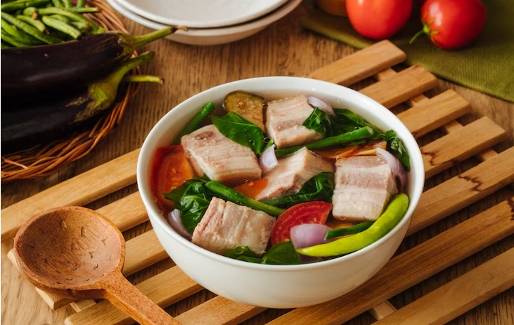

Home
Pork Sinigang

Description
Pork Sinigang is a popular Filipino sour soup known for its tangy and savory flavor, traditionally made with pork, tamarind broth, and various vegetables. It is a comforting dish, often served with rice, and is loved for its rich, hearty taste.
Ingredients:
- 500g pork belly or ribs, cut into pieces
- 1 medium onion, chopped
- 2 tomatoes, chopped
- 1 liter water
- 1 pack (about 40g) tamarind soup mix (or fresh tamarind, boiled and mashed)
- 1 radish, sliced
- 10-12 string beans, cut into 2-inch pieces
- 1 small eggplant, sliced
- 1 cup kangkong (water spinach)
- 2-3 green chili peppers
- Fish sauce or salt, to taste
- Ground black pepper, to taste
Steps:
- Sauté the aromatics - In a pot, heat a little oil and sauté the onion and tomatoes until soft.
- Add pork - Add the pork and cook until lightly browned.
- Simmer - Pour in water and bring to a boil. Lower the heat and simmer for 40-50 minutes until the pork is tender. Skim off excess fat if needed.
- Add souring agent - Stir in the tamarind soup mix (or fresh tamarind juice) and let it dissolve. Adjust the sourness to your preference.
- Add vegetables - Add radish, string beans, eggplant, and green chili peppers. Simmer for another 5 minutes.
- Final seasoning - Season with fish sauce or salt and black pepper to taste.
- Add greens - Lastly, add the kangkong or bok choy and let it cook for 1-2 minutes before turning off the heat.
- Serve - Enjoy your hot and sour Pork Sinigang with steamed rice!